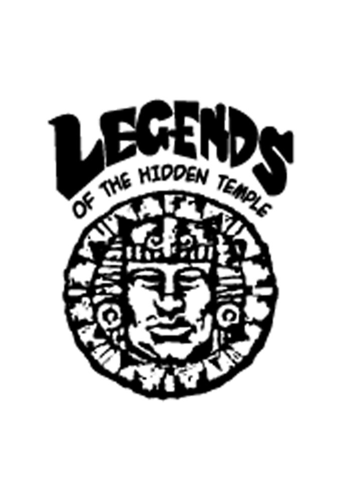
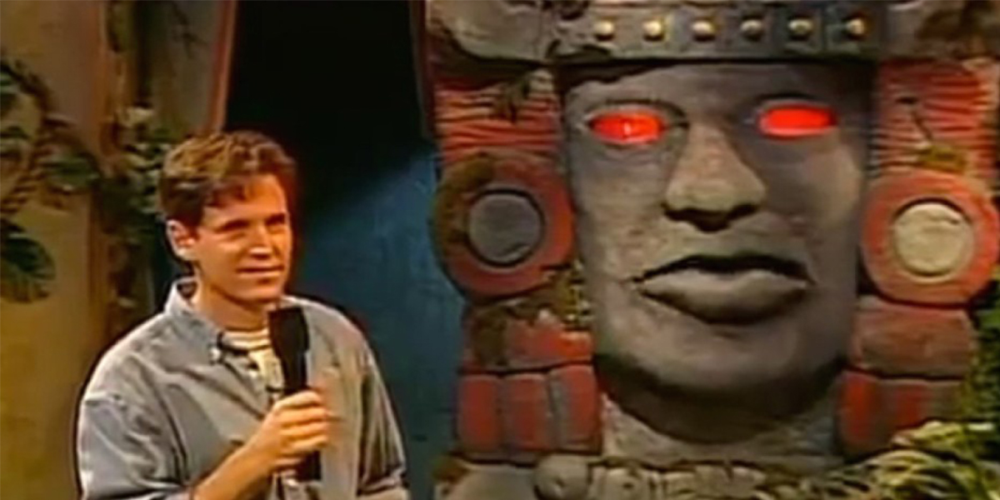
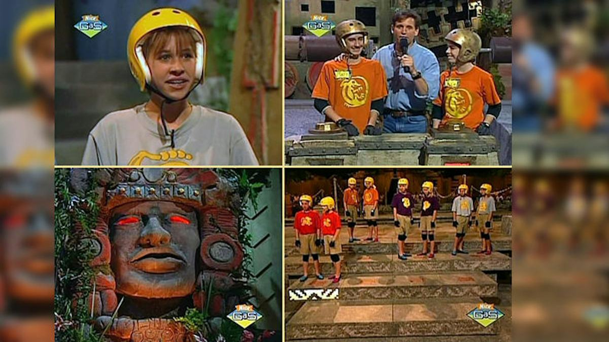
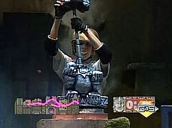

Legends of the Hidden Temple




Details
My notes
I remember kids participating in a game show on Nickelodeon. Legends of the Hidden Temple is the one.
Identification
Confirmed as the original Nickelodeon children’s game show, not the later movie or adult revival.
About
Teams of children compete in physical challenges and questions linked to a legend. Kirk Fogg hosts, while Olmec, the giant talking stone head voiced by Dee Bradley Baker, tells the stories and explains the temple’s secrets. The original programme was produced from 1993 to 1995; that is its production period, not a claim about when I watched it.
Things to recognise
- The giant stone head, Olmec.
- Teams wearing coloured shirts and helmets.
- Blue Barracudas, Green Monkeys, Orange Iguanas, Purple Parrots, Red Jaguars, and Silver Snakes.
- The moat crossing, Steps of Knowledge, Temple Games, and final Temple Run.
- Searching through the temple for an artifact while avoiding temple guards.
Memory details
No particular contestant, episode, language, or viewing year has been recorded yet.
References and picture sources
- Stone & Company — original show’s producer
- Nickelodeon / Paramount+ — original show description
- Nick Rewind — later promotional temple-guard sketch
- TVmaze — original-series logo
- Official revival announcement describing the original show’s familiar rounds and teams
- Kirk Fogg and Olmec picture source
- Original-show team picture source
- Silver Monkey puzzle picture source